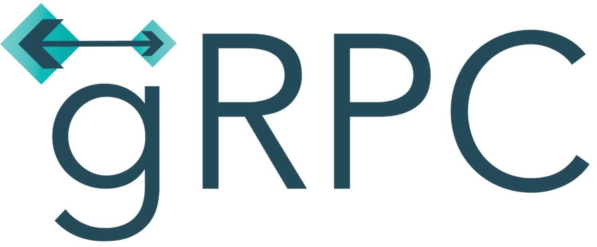
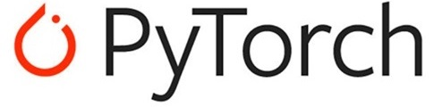
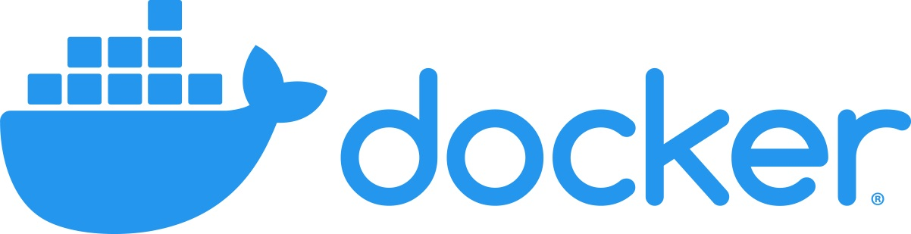

Biography
I am currently a senior AI Scientist in MINDs Lab Inc..
Before that, I obtained my M.S. degree in
the School of Electrical & Computer Science and Engineering
at Ulsan National Institute of Science and Technology (UNIST),
supervised by KwangIn Kim.
My research interests cover the broad area of machine learning and computer vision.
Specifically,
multi-modal (vision-NLP) learning;
visual recognition including classification and segmentation;
zero-(few-)shot learning.
If you are intrested in my research or would like to work with me, feel free to send me an email.
Publications
*: equal contribution
-
Zero-Shot Semantic Segmentation via Spatial and Multi-scale aware Visual Class Embedding
Sungguk Cha*, Yooseung Wang*
Experiences
-
MINDs Lab, Inc.
Sep 2020 - Now
-
Technical Research Personnel for Alternative Military Service
Feb 2021 - Feb 2024
-
Senior AI Scientist
Mar 2021 - Now
-
Statisitical Artificial Intelligence Lab
Jul 2018 - Feb 2019
-
Adviser: Prof. Jaesik Choi
-
Research Topic:
Drivable Area Semantic Segmentation on BDD100k dataset
-
Agents and Robotic Transportation Lab
Dec 2017 - Feb 2018
-
Adviser: Prof. Tsz-Chiu Au
-
Research Topic:
StarCraft AI Algorithm
-
Machine Learning & Artificial Intelligence
Sep 2017 - Dec 2017
-
Adviser: Prof. Sung Ju hwang
-
Research Topic:
Variational Auto Encoder for Text
-
SKT T-brain
Mar 2017
-
Research service invited by Hyunsoo Kim (Superb AI CEO, now)
-
Research Topic:
Machine Learning Application for StarCraft
Educations
Ulsan National Institute of Science and Technology
Advisor: Prof. KwangIn Kim
Master of Science in Computer Science and Engineering
(GPA 3.94/4.30)
Thesis: Zero-Shot Semantic Segmentation via Visual Class Embedding
Ulsan National Institute of Science and Technology
Bachelor of Science in
Computer Science and Engineering (GPA 3.74/4.30)
Cum Laude
Honors & Awards
-
Dacon AI Bit Trader Competition 29th (Top 21%)
Mar 2021
-
NAVER LABS Mapping & Localization Challenge
8th place
Jun 2020
-
Merit based Scholarship
2014, 2016-2018
-
Student StarCraft AI Tournament
4th
Feb 2018
-
Naver UNIST Undergraduate Poster Award, Bronze Prize
Dec 2017
Topic: Reinforcement Learning in StarCraft in Real-Time using Deep Learning
-
Samsung Dream Class Mentoring Scholarship
Spring 2017
-
AAAI AIIDE StarCraft AI Competition, 28th
2017
-
IEEE CIG StarCraft AI Competition 3rd
2017
-
Student StarCraft AI Tournament 3rd
Feb 2017
-
AAAI AIIDE StarCraft AI Competition, 11th
2016
-
IEEE CIG StarCraft AI Competition 10th
2016
-
Korean Olympiad of Informatics Encouragement Prize
2013
Regional representative of Daejeon
-
Daejeon Olympiad of Informatics Gold Prize
2013
-
Korean Olympiad of Informatics Encouragement Prize
2012
Regional representative of Daejeon
-
Daejeon Olympiad of Informatics Gold Prize
2012
-
Korean Olympiad of Informatics Encouragement Prize
2010
Regional representative of Daejeon
-
Daejeon Olympiad of Informatics Gold Prize
2010
Teaching
-
[TA] UNIST/CSE241: Object Oriented Programming
Spring 2020
-
[TA] UNIST/CSE251: System Programming
Fall 2019
-
[Tutor] PyCon Korea
Aug 2019
Topic: Explainable AI
-
[TA] UNIST/ITP117: Introduction to AI Programming II
Spring 2019
-
[TA] UNIST/AHS161: What is "I"
Spring, Fall 2017
Skills
Languages
-
Korean | English | C/C++ | MFC | Python
-
Chinese | Spanish | JAVA | Assembly
Engineering


